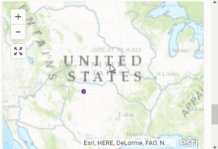
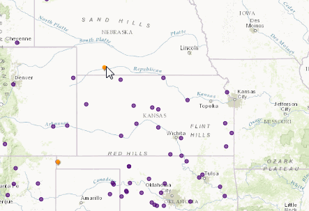

Buffalo Soldiers WebMap Help
Adding Submissions to The Webmap:
• Search around the map to find more information about existing sites
• In order to add a submission to the map, click here this will take you to a new window where you will be able to answer questions about the particular site
• After answering questions you will then be able to place a dot on the map corresponding to the location of interest and submit your entry (see below):

Editing existing submissions:
• To edit existing submissions, click on the point and then click the ellipsis in the lower right hand corner of the info window and click edit (see below):
